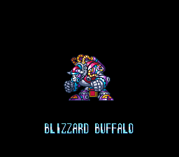
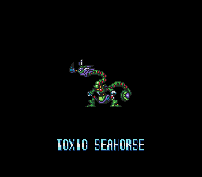
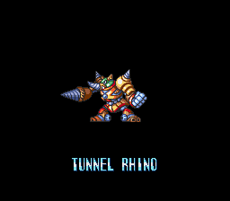
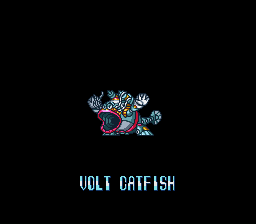
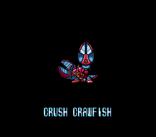
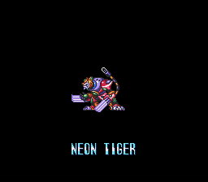
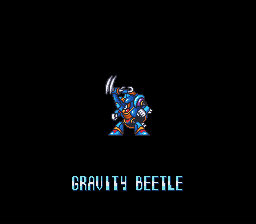
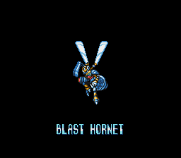

Por que a ordem dos chefes é importante?
Nos jogos da série Mega Man X, a ordem em que você enfrenta os chefes faz muita diferença na sua progressão.
Cada Maverick derrotado concede uma arma especial que normalmente é a fraqueza de outro chefe,
criando uma sequência estratégica que facilita muito as batalhas.
Seguir uma ordem eficiente permite derrotar chefes mais difíceis com muito menos esforço,
além de ajudar a conseguir upgrades importantes, como Heart Tanks e armaduras, com mais facilidade.
Explorar as fases na ordem correta também evita backtracking desnecessário, já que algumas áreas
só podem ser acessadas com habilidades específicas obtidas ao derrotar certos chefes.

Blizzard Buffalo
Búfalo gelado da cidade congelada. Corre em alta velocidade lançando chifre de gelo e Frost Shield (escudo congelante que ricocheteia). Vive em ruas nevadas escorregadias. Fraco para Parasitic Bomb.

Toxic Seahorse
Cavalo-marinho tóxico da represa de esgoto. Dispara Acid Burst (bolhas venenosas explosivas) e se teletransporta pelas paredes. Fase de plataformas aquáticas corrosivas. Fraco para Frost Shield.

Armored Armadillo
Rinoceronte escavador da pedreira. Perfura o chão com chifre giratório e lança Tornado Fang (dentes de vento perfurantes). Túnel de rochas com trilhos móveis. Fraco para Acid Burst.

Volt Catfish
Bagre elétrico da usina de energia. Solta Triad Thunder (raios triangulares) e se transforma em poça elétrica. Plataformas condutoras com lasers. Fraco para Tornado Fang.

Crush Crawfish
Lagosta triturador do estaleiro naval. Investe com garras serrilhadas Spinning Blade e invoca mísseis do seu navio de guerra. Porto com guindastes e contêineres. Fraco para Triad Thunder.

Neon Tiger
Tigre neon da selva urbana. Salta com garras laser e dispara Ray Splasher (projetis que se espalham). Ruas futuristas com vegetação mutante. Fraco para Spinning Blade.

Gravity Beetle(o Beetle renegado)
Besouro gravitacional da fábrica militar. Controla gravidade com voo e lança Gravity Well (poços gravitacionais). Linha de produção com esteiras reversíveis. Fraco para Ray Splasher.

Blast Hornet
Vespa explosiva do arsenal secreto. Dispara Parasitic Bomb (bombas que se grudam e explodem) e hover com ferrão. Depósito de armas com plataformas colapsáveis. Fraco para Gravity Well.